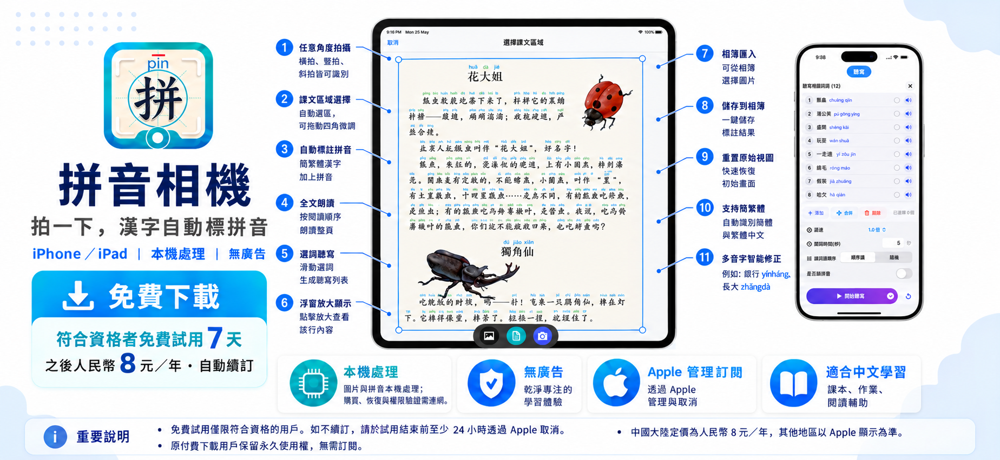

iPhone / iPad · Apple StoreKit
功能與收費
最後更新：2026年10月17日
拍課文，看拼音，聽朗讀
拍攝或匯入中文學習材料。選擇課文區域後，查看漢字與拼音，並使用全文朗讀和選詞聽寫。識別結果可能有誤，請結合原文檢查。
免費下載與年度訂閱
免費下載不表示永久免費。符合資格的 Apple 帳戶可免費試用7天，之後按年收費。中國大陸目標定價為人民幣8元／年；其他地區及最終價格以 Apple 購買頁面顯示為準。確認購買前，請檢查價格、週期和試用資格。
自動續訂與取消
訂閱會自動續訂，直到您取消。如不希望試用後續費，請在試用結束前至少24小時透過 Apple 取消。取消後可使用至何時，以 Apple 返回的有效期為準。取消訂閱不等於退款。退款申請由 Apple 處理，是否批准由 Apple 決定。
原付費用戶
原付費下載用戶保留永久使用權，無需再次訂閱。升級後如未顯示權限，請使用原 Apple 帳戶並選擇「恢復購買」或「重新確認」。不要重複購買。
本機處理與連網要求
OCR 圖片識別和拼音處理在本機完成，不向開發者伺服器上傳學習圖片。購買、恢復購買和權限驗證需連網訪問 Apple 服務。應用不顯示廣告。
